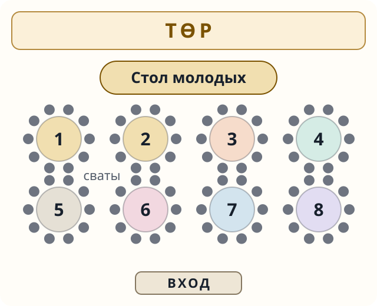
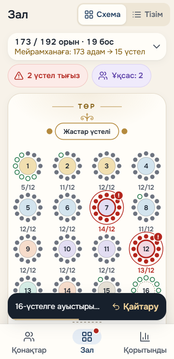

Рассадка гостей на тое: традиция, схема, план онлайн
Рассадка гостей на тое — это 200–400 человек за круглыми столами и один главный вопрос: кого куда посадить, чтобы никто не обиделся. Если вы думаете, как рассадить гостей на свадьбе или другом тое, начните с главного. Традиционные правила описаны для дома и приёма гостей, а не для банкетного зала. Поэтому ниже мы отдельно говорим, что говорит традиция, и отдельно — как сажают сегодня. А в конце — как составить план рассадки онлайн и отправить каждой семье номер её стола.
Содержание
Рассадка на тое: что говорит традиция и как делают сегодня
Традиция · как описано для дома
Төр — самое почётное место, напротив входа. Там сидят старшие и самые уважаемые гости. Гостя приглашают туда словами «Төрлетіңіз» или «Төрге шығыңыз» — «проходите на почётное место».
Сидят по возрасту, говорят по красноречию. Автор одной колонки приводит выражение: «Жасына қарап отырып, жағына қарап сөйлейтін халықпыз» — «мы народ, который садится по возрасту, а говорит по красноречию».
При этом, по одному из источников, самый старший по возрасту — не всегда самый почётный гость. Гостя, который приехал издалека, сажают на төр, сколько бы ему ни было лет. Об этом — пословица, которую приводит тот же автор: «Алыстан алты жасар бала келсе, алпыстағы шал барып сәлем береді» — «если издалека приехал шестилетний ребёнок, шестидесятилетний старик выходит его поприветствовать».
Сваты. По тому же источнику, на первом приёме новых сватов, құда шақырыс, на төр садится старший из сватов. Родня хозяев садится ниже, независимо от возраста.
Нағашылар — родня по матери. Автор одной колонки считает, что нағашы почитаются выше родни по отцу, и сам называет своё объяснение предположением. Правилом рассадки это считать нельзя.
Женщины и мужчины. Казахские женщины сидят за одним дастарханом с мужчинами. По тому же источнику, в разных регионах есть различия в мелочах.
Как делают сегодня
Это практика, а не обычай.
- Круглые столы на 10–12 мест. Стол диаметром 1,5 м вмещает 10–11 человек — так пишут в объявлениях на Kaspi.
- Поимённая рассадка с планом у входа встречается в дорогих залах Алматы.
- Стол молодых обычно ставят у төра, столы сватов — ближе к төру. Источников о том, что так велит традиция, нет: так обычно делают сегодня.
- Без «трона». Этнограф Байахмет Жұмабайұлы советует не сажать молодых на «трон» — особое возвышение.
Кто сидит за столом молодожёнов
Традиционной нормы для банкетного зала нет. Обычно с молодыми сидят их друзья — күйеу жолдас со стороны жениха и құрбылар, подруги невесты. Это современная практика, а не обычай.
Если той — не свадьба, а сүндет той, бесік той или юбилей, в сервисе вместо стола молодых будет «Почётный стол» — для виновника тоя и самых близких.
Где сидят сваты и нағашылар
Сваты. Традиционный принцип описан для дома: на первом приёме сватов старший из них садится на төр. В банкетном зале сватов обычно сажают ближе к төру. Это практика, источников о ней нет. Как встречают сватов на қыз ұзату, мы рассказываем в статье «Что такое қыз ұзату».
Нағашылар. Это почётные гости. Есть одно мнение, что нағашы почитаются выше родни по отцу, но это взгляд одного автора, а не общее правило. Кого сажать ближе к төру — сватов, нағашы или старших родственников по отцу, — решает каждая семья.
Схема рассадки гостей на свадьбе
Схема рассадки гостей на тое обычно выглядит так. У стены напротив входа — төр, там стоит стол молодых или почётный стол. Ближе к нему — столы сватов и старших гостей. Дальше рядами — круглые столы родни, друзей, коллег и соседей. Это не правило, а удобный ориентир, который вы меняете под свой зал.

Сколько столов нужно
Посчитать просто: разделите число гостей на число мест за столом и округлите вверх. Если в зале круглый стол на 12 человек, на 150 гостей понадобится 13 столов, а при 10 местах — 15.
| Гостей | Столов по 10 мест | Столов по 12 мест |
|---|---|---|
| 100 | 10 | 9 |
| 150 | 15 | 13 |
| 200 | 20 | 17 |
| 300 | 30 | 25 |
| 400 | 40 | 34 |
С чего начать: порядок работы
План рассадки онлайн: как это работает
Рассадка гостей онлайн начинается со списка гостей. Когда ответы собраны, вы задаёте зал: сколько круглых столов и на сколько мест каждый. Дальше план рассадки гостей складывается из трёх вещей.
- Категории. Каждый гость относится к категории: сваты, родня по отцу, родня по матери, друзья, коллеги, соседи, одноклассники или однокурсники. Можно добавить свою.
- Порядок рассадки. Вы выстраиваете категории по порядку: кто выше в списке, тот ближе к төру. Порядок по умолчанию — только подсказка. Вы меняете его сами: если в вашей семье нағашы сажают ближе сватов, просто поднимите их выше.
- Зал. Сервис рассаживает гостей по столам с учётом порядка. Тесные столы подсвечиваются, а гостей без места видно отдельным списком.
Любого гостя можно пересадить вручную. Если передумали — изменение легко отменить, а в истории изменений видно, что менялось. Подробнее обо всех шагах — на странице «Как работает {BRAND}».

Номер стола гостю в WhatsApp
Когда рассадка готова, нажмите «Отправить номера столов». Каждой семье уходит сообщение в WhatsApp: номер стола стоит в первой строке, его видно уже в уведомлении. По ссылке гость видит, где стоит его стол. Так в день тоя меньше гостей будет искать своё место у входа.
Печать по столам и вход
Список гостей можно распечатать по столам или сохранить в PDF — для ресторана, ведущего или на случай, если что-то пойдёт не так. А помощник на входе открывает свою ссылку заранее: в день тоя список работает даже без интернета. Он находит гостя по имени, отмечает, что тот пришёл, и подсказывает номер стола.
Вопросы
Кто сидит на төре?
Старшие и самые уважаемые гости. По одному из источников, на төр сажают и гостя, приехавшего издалека, независимо от возраста.
Где сидят сваты на казахской свадьбе?
По традиции, описанной для дома, старший сват на приёме сватов садится на төр. В зале сватов обычно сажают ближе к төру — это современная практика.
Сколько человек за круглым столом?
Обычно 10–12. Стол диаметром 1,5 м вмещает 10–11 человек — по объявлениям на Kaspi.
Сажают ли молодых на төр по традиции?
Источников об этом нет. Төр традиционно — место старших и почётных гостей. Стол молодых у төра — современная практика.
Нужна ли поимённая рассадка?
Решает семья. На больших тоях гостей часто рассаживают группами — по столам, а не по конкретным стульям. Поимённую рассадку с планом у входа делают в некоторых дорогих залах.
Источники
- Қазақша Википедия, «Төр» — kk.wikipedia.org
- pricom.kz, Кайрат Сатаев, «Почетной вам посадки!», 2019 — pricom.kz
- tengrinews.kz, «Қазақ қонақты қалай күткен?», 2018 — tengrinews.kz
- informburo.kz, Б. Ахметұлы, «Беташардың мәні неге бұзылды? Тойды тәртіпке келтіруге бес кеңес», 2019 — informburo.kz